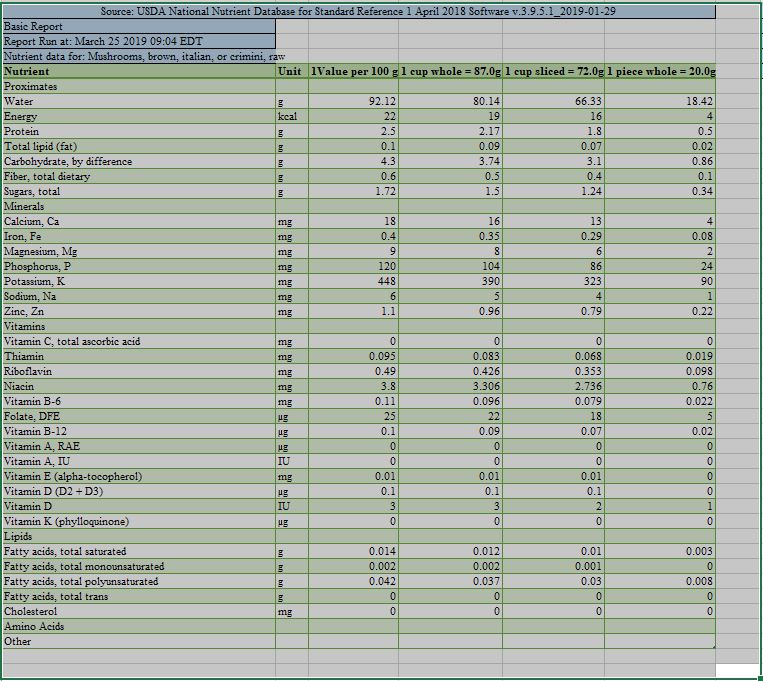

Image and Nutritional Data of A.Bisporus also Known as Crimini, Brown, or Italian Mushrooms.
Nutritional Data provided by the United States Department of Agriculture Research Service
Photo
by Fred Stevens
